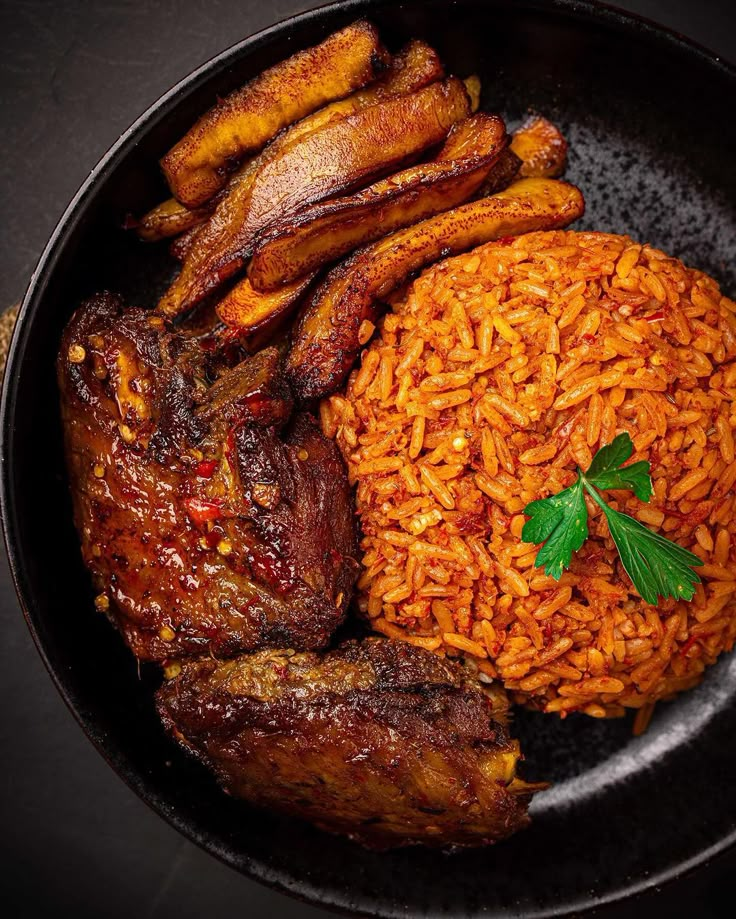

Home
Go to Bottom
🔥 Smoky Nigerian Jollof Rice – The King of West African Cuisine 🔥

📌 Description
Jollof Rice is a beloved West African dish known for its rich, smoky flavor and vibrant red color.
It is made by cooking long-grain parboiled rice in a delicious tomato sauce infused with spices, onions,
and bell peppers. The dish is often accompanied by fried plantains, grilled chicken, or beef, making it
a staple at Nigerian gatherings and celebrations.
The secret to a perfect Jollof Rice lies in the slow simmering of the sauce, allowing the flavors to
fully develop. Some variations include adding vegetables, shrimp, or even coconut milk for a unique twist.
Whether served at weddings, parties, or Sunday dinners, Jollof Rice is a dish that people together.
🥙 Ingredients
👨🍳 Steps
- The inevitable foundation for building up the flavor in this meal is to start by sauteeing the Onions. This should take about 3 to 5 minutes. The next thing is to stir in the tomato paste. This adds a deep and rich tomato flavor; I simply fry this for another 5 minutes or thereabout.
- Add the ginger and garlic and cook along with the tomato paste for another two minutes; Actually, by the time this is ready, you will notice it in the smell. If you keep it cooking any longer, you might risk burning them.
- Add the blended peppers, Usually, there is no particular time frame for frying this pepper. I often stop when the sauce becomes really thick, and the oil literally floats on top of the sauce. At this point, most of the water is gone, and the sauce no longer smells raw. Trust me, you will know, but just in case you are still in doubt, I would say maybe 15 to 20 minutes depending on the quantity of water in your blended pepper.
- Finally, in building my flavor, I add the thyme, curry powder, salt, white pepper (good but optional), and seasoning cubes. Adjust the seasoning at this point if there is a need to.
- Once the flavor is on point, then, I stir in the Rice. Make sure you stir the rice properly until you cover each grain of rice with the sauce.
- Now add the chicken stock. Give it a brief stir and cover it up with a tight-fitting lid. If your lid is not fitting enough, simply cover the rice with foil paper before covering it with the lid. This is because Jollof needs a lot of steam in order to turn out well.
- Once the rice comes to a boil, reduce the heat to medium-low immediately and continue to until the rice is done, about 20 to 30 minutes.
Home
Back to Top